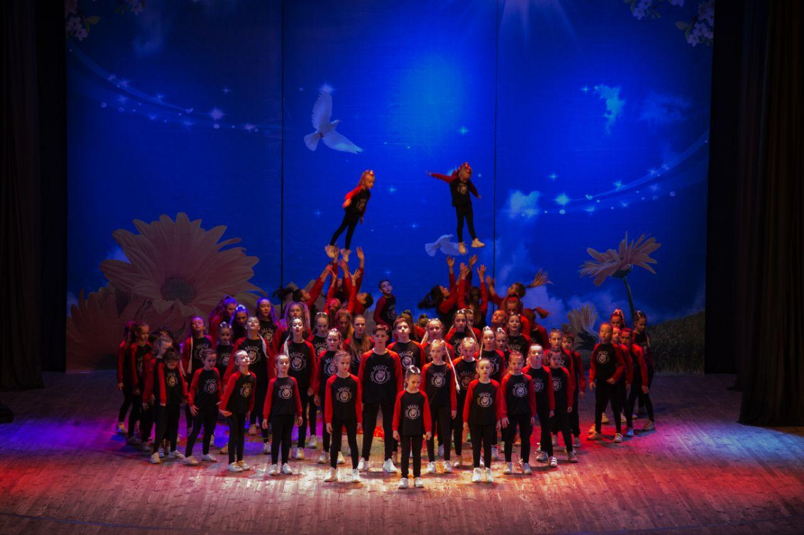

Рады видеть Вас на официальном сайте коллектва эстрадно-спортивного танца "Delice School Dance". Танцы для детей – это и грациозность, красивая осанка, крепкий иммунитет, уверенность в себе и расширение круга общения с раннего возраста.
Представляем вам коллектив эстрадно-спортивного танца «Delice». За тринадцать лет существования коллектива мы собрали самые лучшие направления в хореографии, которые позволят вашему ребенку реализоваться и достичь больших высот в выбранной им сфере творчества.

Направления:
- современная хореография;
- Street dance;
- Hip Hop;
- Contemporary;
- Vogue;
- Krump;
- Dancehall;
- Jazzfank.
Мы - разновозрастной коллектив, который, ежедневно оттачивая навыки и умения, стремится завоевать как можно больше наград на всевозможных конкурсах. В деятельность коллектива входит выступление на различных площадках города и области, регулярные выступление «дома» (на сцене родного ДК), а также участие в различных Международных фестивалях и конкурсах.
С малых лет участникам коллектива прививаются актерское мастерство, грация, точность и правильность выполнения движений, и конечно, безграничная любовь к танцу. В танцевальном искусстве красота и совершенство формы неразрывно связаны с красотой внутреннего содержания танца. В этом единстве заключена сила его воспитательного воздействия. Исполнение танца несет в себе элементы художественного творчества. В своих сценических номерах мы охватываем практически все стили и направления современной хореографии.
Мы ждём всех желающих, которые живут танцем, хотят расширить свой творческий и личностный потенциал, избавиться от различных комплексов, страха перед публичным выступлением.